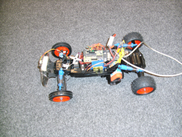

Auf dieser Homepage ist ein Kurs für Regelungstechnik. Die mathematisch/regelungstechnischen Zusammenhänge werden mit vereinfachten Simualtionen veranschaulicht. Zusätzlich werden Experimente mit einem Controllerboard und einem Modellbauauto gemacht. Es gibt einen Unterschied zwischen der vereinfachten Simulation und den Experimenten.

Youtube Video Abstandsregelung Mechanische Deichsel